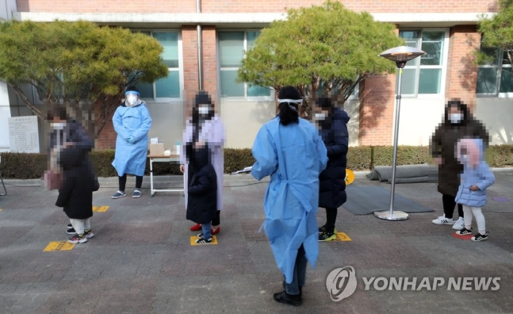

국내 신종 코로나바이러스 감염증(코로나19) '3차 대유행'이 진행 중인 가운데 29일 신규 확진자 수는 400명대 중반으로 집계됐다.
지난 26∼28일(581명→555명→503명) 사흘 연속 500명대 기록 후 나흘 만에 500명 아래로 떨어졌다. 최근 4일간 확진자 수가 조금씩 감소하는 양상을 보이지만 확산세가 꺾였다고 단정하기는 어렵다. 특히 이날 확진자 수가 줄어든 것은 주말 검사 건수가 직전 평일 대비 7천여건 감소 영향도 있는 것으로 보인다.
<방역당국은 가족·지인간 모임, 학교, 학원, 사우나 등 일상 공간에서 집단감염이 속출하고 있어 당분간 확산세가 이어질 것으로 보고 있다. 감염병 전문가들은 하루 1천명 이상 확진자가 나올 수도 있다고 경고하는 상황이다.
정부는 이날 오후 중앙재난안전대책본부(중대본) 회의를 열어 '사회적 거리두기' 단계 격상을 비롯한 방역강화 대책을 논의한다.
단계 격상의 기준인 1주간 일평균 지역발생 확진자 수는 416명에 달해 전국 2.5단계(400∼500명 이상 또는 더블링 등 급격한 증가시) 범위에 들어온 상태다.